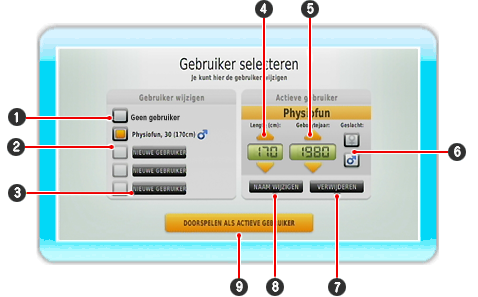

Dit is waar je nieuwe gebruikers kunt registreren, de modus kunt wijzigen in Fysio of Amusement, of de resultaten van de Evenwichtstest online kunt vergelijken.
Als je de Fysio- of Amusementsmodus start, wordt er altijd gevraagd of je als de geselecteerde speler wilt spelen. Als je geen speler hebt geselecteerd, moet je je eerst registreren of een andere geregistreerde speler selecteren.

| 1 |
Als je geen gebruiker wilt selecteren, klik je hier.
|
| 2 |
Hier zie je geregistreerde spelers met hun gegevens (leeftijd, lengte, geslacht). De actieve speler wordt gemarkeerd met het oranje veld.
|
| 3 |
Klik hier om een nieuwe gebruiker te registreren.
|
| 4 |
Geef de lengte van de gebruiker op in cm. Hiervoor gebruik je de pijlknoppen of beweeg je de  omhoog of omlaag. Houd ingedrukt om de getallen sneller te selecteren. omhoog of omlaag. Houd ingedrukt om de getallen sneller te selecteren.
|
| 5 |
Hier voer je de geboortedatum van de gebruiker in met de pijlknoppen. Houd de knop ingedrukt om de getallen sneller te selecteren.
|
| 6 |
Gebruik de Wii-afstandsbediening, richt op het geslacht van de gebruiker en druk daarna op de  . De selectie van het geslacht bepaalt of je tijdens de oefeningen een man of een vrouw ziet. . De selectie van het geslacht bepaalt of je tijdens de oefeningen een man of een vrouw ziet.
|
| 7 |
Verwijder de actieve speler door de Wii-afstandsbediening op de knop 'Verwijderen' te richten en daarna op de te drukken.
|
| 8 |
Wijzig de actieve gebruiker door de Wii-afstandsbediening op de knop 'Wijzigen' te richten en daarna op de te drukken.
|
| 9 |
Selecteer deze knop om de gemarkeerde gebruiker te selecteren en terug te keren naar het vorige scherm.
|